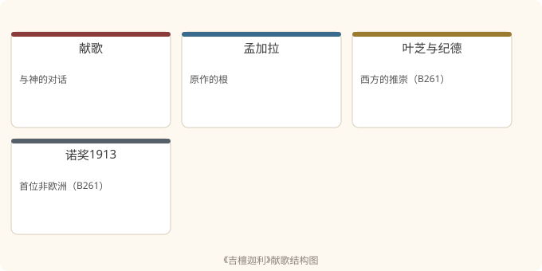

吉檀迦利
一、基本信息
| 作者 | 泰戈尔 |
|---|---|
| 成书/出版 | 1912—13年英文版（Britannica：hailed by W.B. Yeats and André Gide and won him the Nobel Prize in 1913） Rabindranath Tagore — Encyclopaedia Britannica（百科全书） |
| 国别/地区 | 印度 |
| 时代 | 近代 · 20世纪初 |
| 体裁 | 散文诗集 |
| 语言 | 英语（自孟加拉语转译） |

《吉檀迦利》献歌结构图（主题·结构图）
二、创作背景
Britannica（B261）：'This book, containing Tagore's English prose translations of religious poems from several of his Bengali verse collections'——孟加拉语宗教诗的英语散文自译；'hailed by W.B. Yeats and André Gide and won him the Nobel Prize in 1913'。
授奖词（B261）：'profoundly sensitive, fresh and beautiful verse'。
三、内容脉络
103首散文诗（首数通说待核）：献给'神'的献歌——爱情、劳作、死亡与宁静（通说）。
四、主要人物表
| 人物 | 身份 | 说明 |
|---|---|---|
| 歌者 | '我' | 向神献歌的人 |
五、主题与艺术特点
- 献歌体：人与神的对话（通说）。
- 东方灵性的英语转渡（B261：English prose translations）。
- 'fresh and beautiful verse'（B261 授奖词）。
六、影响与评论
- Britannica：1913年诺奖——'the first non-European to receive the Nobel Prize'（B261）。
Rabindranath Tagore — Encyclopaedia Britannica（百科全书） - Britannica：叶芝与纪德的推崇（hailed by W.B. Yeats and André Gide）（B261）。
Rabindranath Tagore — Encyclopaedia Britannica（百科全书）
七、阅读建议
难点
- '神'的多义（人格神/泛神/自我）。
- 散文诗的节奏——朗读。
- 《吉檀迦利》（冰心译本，人民文学出版社，通说待核）。
- 英文原版（公有领域）。
与《飞鸟集》《新月集》合读。
八、待核实
- 篇数（103首说）核对。
- 冰心译本信息核对。
- 叶芝序言（1912年说）待核。
本页主要来源
泰戈尔的其他收录作品：吉檀迦利